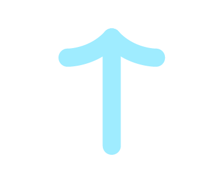
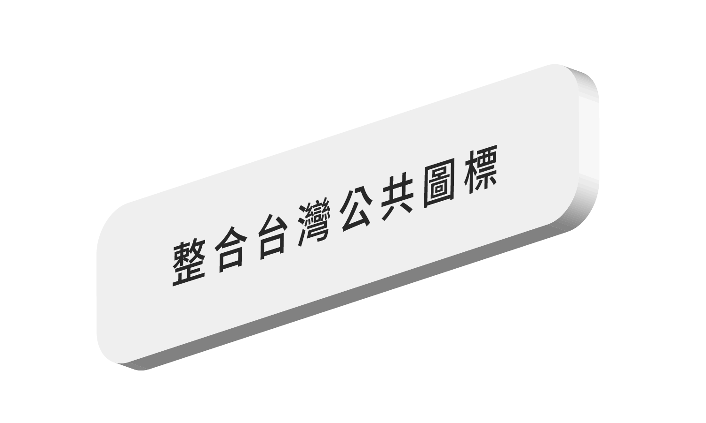
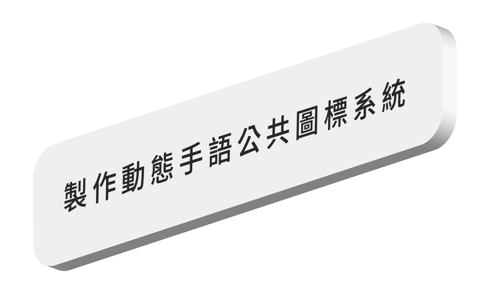
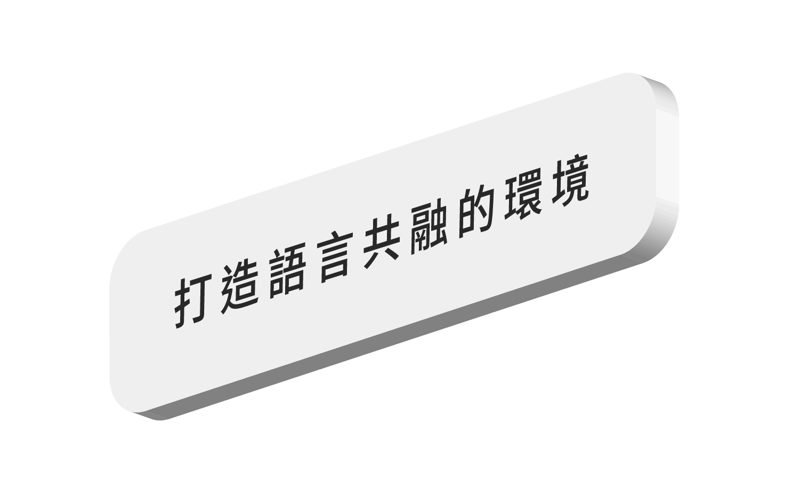
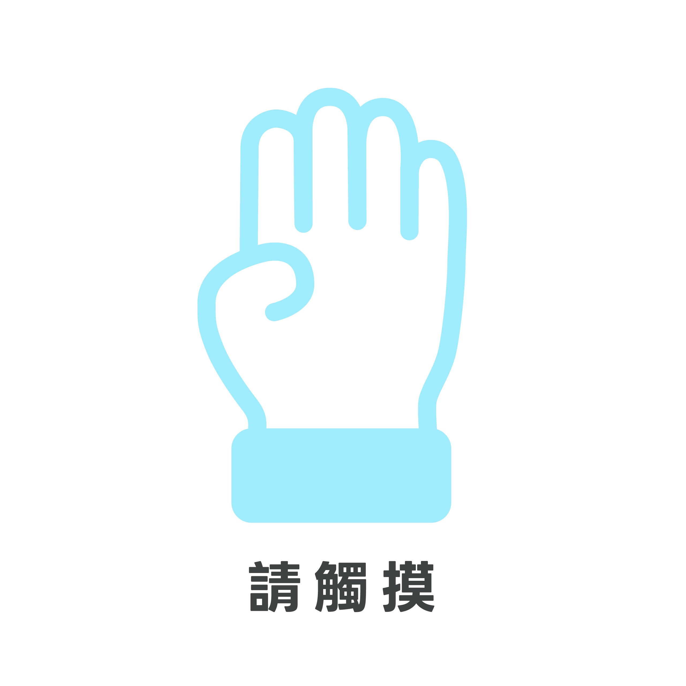
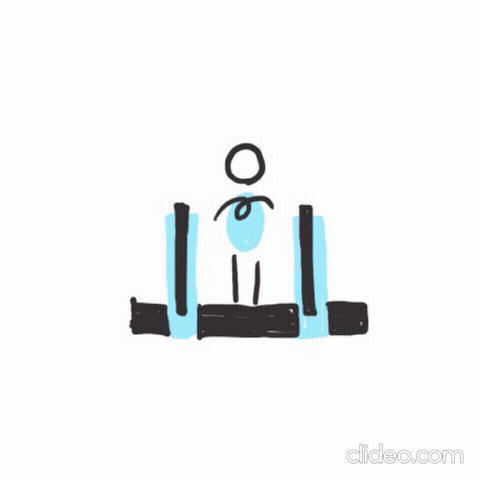
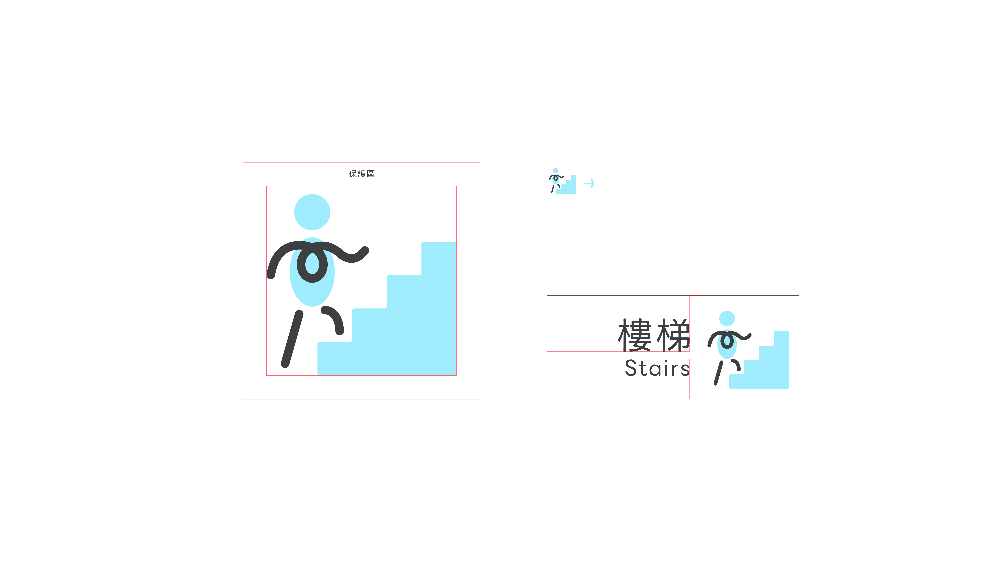
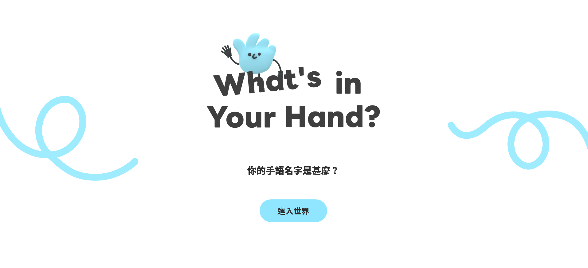

來看看其他圖標吧!
首頁
圖標總攬
手語專欄

鼠標移過來一下

什
麼
是
動
字
動
字
?
台灣手語現況
手語資源預算被刪減
聽障者真實需求難反映
手語翻譯員不足
手語師資不足
被視為社會福利
大眾對手語誤解
收入不穩
大眾對手語的了解很少?
考考你！選項可以拖曳
聾啞人士的母語是手語
手語沒有分左右手
手語是一種語言
台灣手語有南北之差
手語是國際通用
表情也是手語的一部份
手語是一個有空間感、視覺性的語言
對
錯
我
們
做
了
什
麼
？

實地訪談
跟各手語協會討論專題
研究手語如何更融入圖標及社會

設計規範
設計對應手語動作的圖標，制定規範
實際應用
希望未來在電子面板普及
動字動字也可以出現在公共場合中
Icon Name
下載 PNG
下載 WebM
圖標規範
模擬情境展示
廁所
學校
圖書館
餐廳
公園
體育館
月台
捷運
高鐵
公車
機場
海關
加油站
禁止飲食
禁止拍攝
禁止觸摸
禁止交談
禁止吸菸
滅火器
一般垃圾
資源回收
茶水間
置物櫃
哺(集)乳室
樓梯
手扶梯
電梯
進入
公共電話
無線網路

0
A
0
A
0.4A
0.1A
0.2A
0.2A
A
圖標最小尺寸：不得低於 20mm
📄
下載完整規範
施工中...

來玩玩看心理測驗吧！
施工中...
施工中...
施工中...


乳室.png)